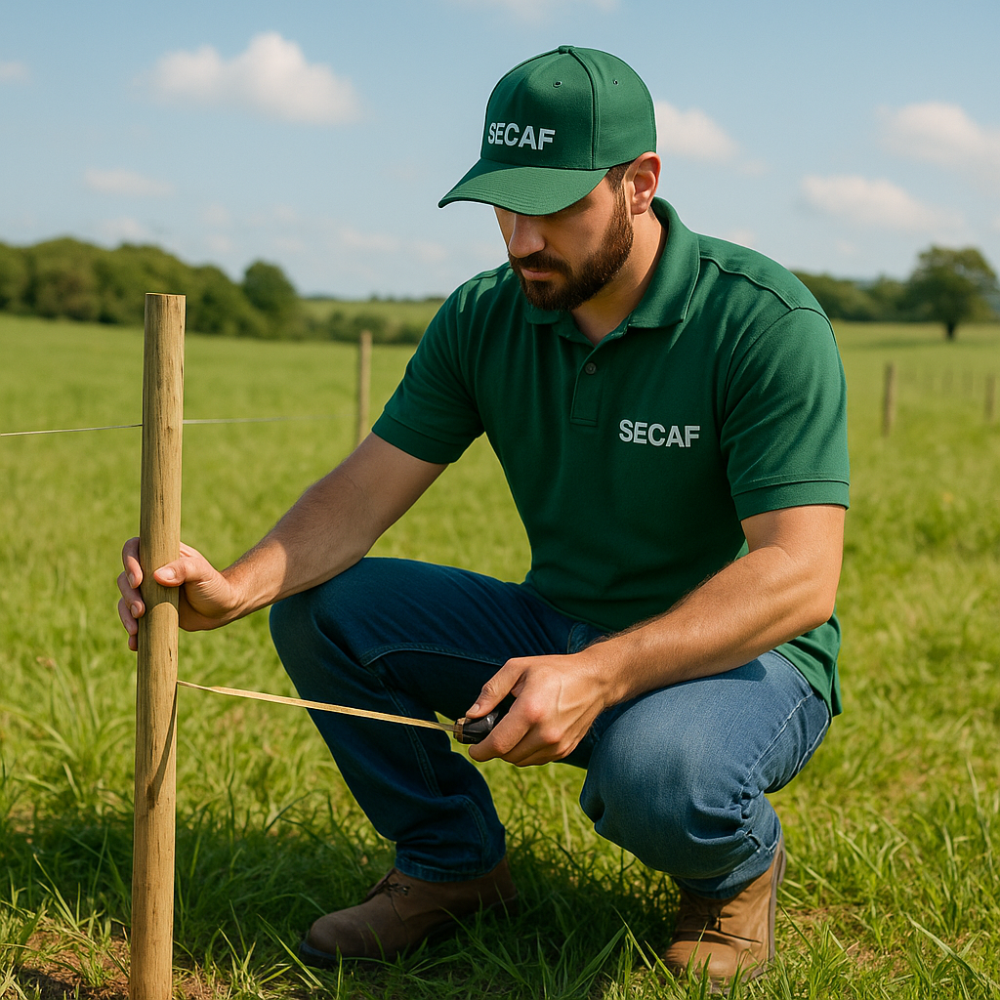

Piqueteamento e Manejo Inteligente de Pastagens
O piqueteamento é uma técnica estratégica de divisão de pastagens em áreas menores chamadas piquetes, permitindo o manejo rotacionado, recuperação do capim e o aumento significativo da produtividade animal por hectare.
Benefícios do Piqueteamento
- Melhor aproveitamento da pastagem e do solo;
- Aumento da taxa de lotação e da produção de carne ou leite por área;
- Controle do pisoteio e da erosão do solo;
- Facilidade no manejo dos animais e na suplementação;
- Recuperação natural da pastagem entre ciclos de pastejo.
Serviços de Piqueteamento da SECAF
1. Planejamento da Divisão de Áreas
Análise técnica do relevo, tipo de solo, topografia, drenagem, tipo de pasto e número de animais para definir a melhor estratégia de divisão e rotatividade.
2. Dimensionamento do Número e Tamanho dos Piquetes
Definimos o número ideal de piquetes com base na capacidade de suporte da forrageira, ciclo de pastejo e tempo de descanso, garantindo equilíbrio entre oferta e consumo.
3. Implantação de Cercas e Corredores
Instalação de cercas fixas ou elétricas, corredores de manejo, divisões internas e pontos estratégicos de acesso à água, mineralização e sombreamento.
4. Sistemas de Pastejo
- Rotacionado Intensivo (Voisin): Alta lotação com manejo intensivo e maior controle.
- Alternado: Utiliza dois ou mais piquetes em rodízio simples.
- Contínuo com ajustes: Uma área única com lotação ajustada periodicamente.
5. Manejo e Recuperação de Pastagens
Serviços complementares como adubação de correção e manutenção, controle de invasoras, sobressemeadura, descompactação do solo e ressemeadura de espécies forrageiras.
6. Implantação de Sistema Silvipastoril (ILPF)
Integração entre árvores, pastagem e gado, com piqueteamento adaptado para produção diversificada, conforto animal e melhoria ambiental.
Tecnologia e Sustentabilidade
Trabalhamos com georreferenciamento, softwares de dimensionamento de piquetes, e técnicas de baixo impacto ambiental. Nossos projetos valorizam a conservação do solo, a eficiência do manejo e o bem-estar animal.
Para quem é indicado?
Produtores de gado de corte, leite, ovinos, caprinos e até cavalos que buscam produtividade, organização e sustentabilidade na propriedade.
Resultados Esperados
- Aumento de até 3 vezes na produção por hectare;
- Redução do custo com alimentação concentrada;
- Mais controle sobre o rebanho e a produção diária;
- Maior vida útil das pastagens implantadas.
Fale com a SECAF
Nossa equipe técnica está pronta para transformar sua pastagem com inteligência, técnica e resultado. Solicite seu projeto de piqueteamento personalizado com a SECAF!